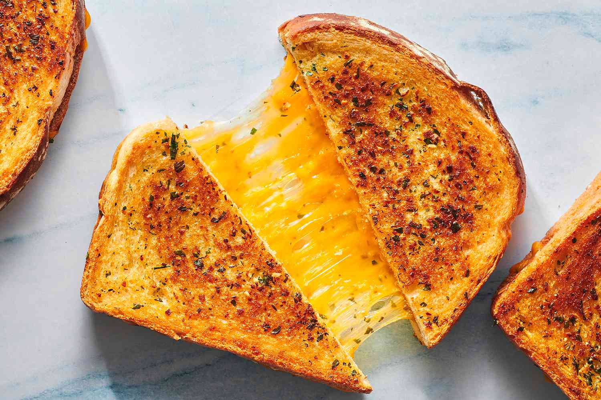

How to make Grilled Cheese

Description:
This grilled cheese dish is really simple and uncomplicated. This recipe will provide extraordinarily excellent and buttery grilled cheese! This recipe calls for common household products, and all of the components can be bought at your local grocery. So, what are you waiting for? Explore this website further to learn how to make delicious grilled cheese!
Materials/Ingredients:
- Bread
- Non-stick Pan
- Butter
- Butter Knife
- Cheese
- Spatula
- Plate
Steps:
- Get two pieces of bread, and spread butter thoroughly on 1 side of the bread. Do this for both slices of bread.
- Get your pan, and turn on the heat to medium.
- Put your bread butter side down so the non butter side is facing up.
- Place 2 piece of cheese on the bread. Then put the other slice of bread butter side up
- Wait until the first slice of bread is golden-brown. Then flip
- Now wait until the other side is golden brown.
- With a spatula take your bread and put it on a plate
- Enjoy your fresh grilled cheese sandwich!